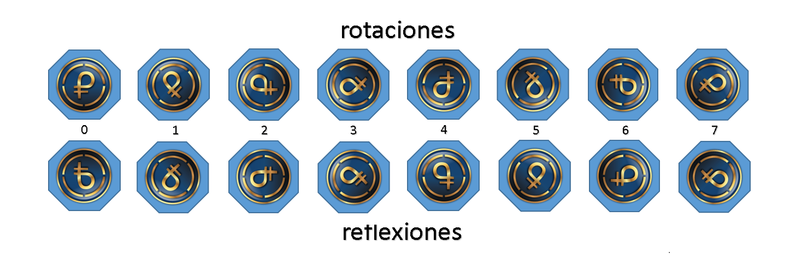
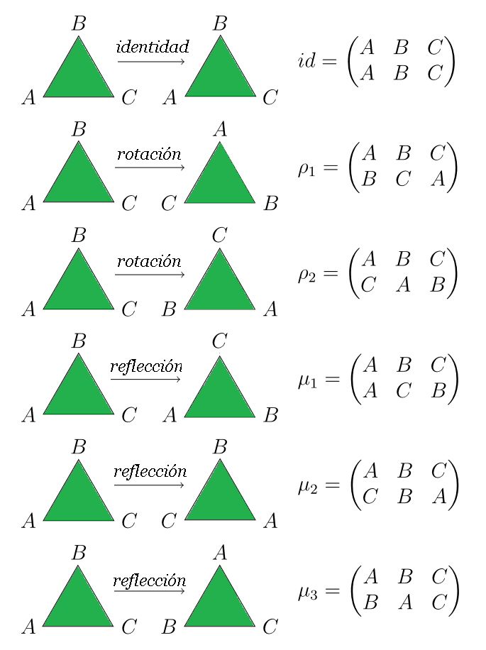
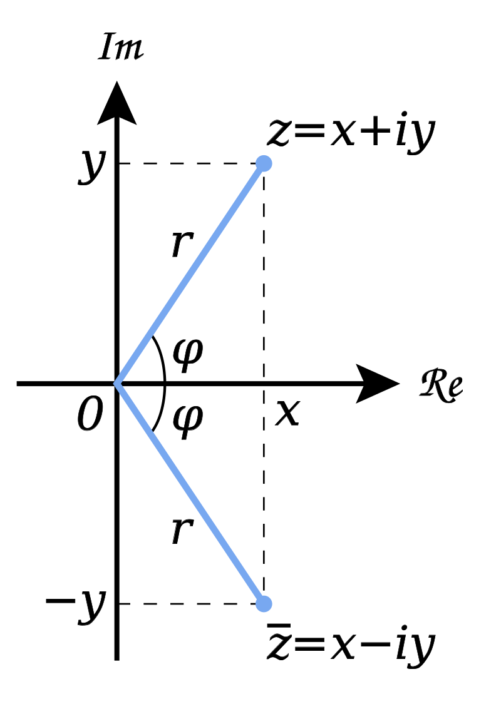

Los conjuntos equipados con operaciones binarias que permiten combinar elementos del conjunto de varias maneras, se dice poseen estructuras algebraicas binarias; estas estructuras algebraicas por lo general se denotan como \(\left\langle W,\ast
\right\rangle\text{,}\) donde ‘\(W\)’ sería el conjunto y ‘\(\ast \)’ la operación algebraica. No todas las operaciones binarias se denotan con el símbolo ‘\(\ast\)’. Existe una gran cantidad de operaciones algebraicas conocidas desde la antigüedad, con sus notaciones estandarizadas. Entre ellas: ‘\(+\)’ sobre \(\mathbb{Z}\text{;}\) ‘suma’ y ‘\(\cdot \)’ o ‘\(\times \)’ sobre \(\mathbb{R}\text{;}\) ‘producto’ o ‘multiplicación’.
Subsección2.3.1Leyes de Composición Interna
Los matemáticos han clasificado la diversidad de estructuras matemáticas estudiadas desde la antigüedad, mediante un sistema descriptivo axiomático que les clasifica según la cantidad de Leyes de Composición Interna (LCI) que verifican los elementos de cada conjunto; y de las propiedades que cumplen las operaciones con esas leyes de composición.
Definición2.3.1.Ley de Composición Interna.
En álgebra abstracta, la ley de composición interna, es un tipo de operación binaria entre elementos de un mismo conjunto e.g., \(G\) que indica como deben ser manipulados los elementos del conjunto; el resultado es otro elemento del conjunto \(G\text{;}\) las propiedades de estas operaciones binarias dan lugar a distintas estructuras algebraicas 1 .
Demostración.
Una operación binaria o ley de composición en un conjunto \(G\) es una función \(G
\oplus G \mapsto G\) que asigna a cada par \((a,b) \in G \oplus G\) un único elemento \(a \oplus b\) en \(G\text{,}\) llamado composición de \(a\) ‘mas’ \(b\text{.}\)
Nota2.3.2.
Tener presente que la ley de composición también puede ser definida como una operación binaria o ley de composición ‘multiplicativa’; en ese caso: \((a,b) \in G \odot G\) asigna un único elemento \(a \odot b\text{,}\) o \(ab\) en G, llamado composición de \(a\) ‘por’ \(b\text{.}\)
Clasificación de las estructuras.
Es conveniente tratar a la diversidad de estructuras matemáticas de acuerdo a las Leyes de Composición (internas o externas) que verifican y a sus bases axiomáticas; sin embargo, sólo haremos referencia a las estructuras más relevantes para alcanzar el objetivo propuesto; las más necesarias son resaltadas en las tablas siguientes:
La base axiomática asumida por el álgebra abstracta no difiere (como antes se comentó) de la base axiomática que desde la antigüedad ha venido soportando al álgebra elemental. Los axiomas son las columnas en las que se soportan las matemáticas. Toda afirmación considerada válida debe de tener una base axiomática que la soporte; o debe poder ser demostrada a partir de axiomas. Los axiomas se aceptan como verdaderos; y su veracidad no puede ser demostrada a partir de otros axiomas. Se presenta el axioma de la adición, adaptado de Alexandroff; en base a los números enteros[1]. Considérese el lector en libertad de cambiar las palabras «números enteros» por las del conjunto que prefiera (numérico o no-numérico).
Axioma2.3.3.de la Adición.
Dos números enteros pueden siempre ser «sumados» (operación que denotaremos por: \(\oplus\)), si satisfacen las siguientes condiciones conocidas como axiomas de la adición.
Dos números enteros siempre pueden ser sumados:
Es decir; dado dos números enteros arbitrarios \(a\) y \(b\text{,}\) existe otro número entero unívocamente determinado, llamado suma y denotado por \(a \oplus b.\)
Propiedad asociativa:
Dado, tres números enteros \(a,b,c\) la identidad: \((a
\oplus b) \oplus c = a \oplus (b \oplus c)\) es siempre válida.
Existencia del cero:
Existe un número entero determinado, que llamaremos e = 0, tal que todo número entero \(a\) satisface la relación \(a
\oplus e = e \oplus a = a\text{.}\)
Existencia de elemento opuesto:
Para todo número entero \(a\text{,}\) existe otro número entero \(-a\) llamado su opuesto.
Conmutatividad:
El orden de operación de los números enteros sumandos no altera la suma, \(a \oplus b = b \oplus a\text{.}\)
Planteamos la base axiomática aditiva preferente a la base axiomática multiplicativa, pero esta preferencia carece de importancia. Es decir, sólo cambiaría el elemento neutro que en el producto será indicado con \(1\text{,}\) y en vez del opuesto, consideraremos el inverso que lo denotamos por \(a^{-1}\text{.}\) Si hubiéramos preferido la terminología multiplicativa, entonces llamaríamos a la operación entre los elementos del conjunto por una de las siguientes alternativas: ‘por’, ‘multiplicación’ o ‘producto’; como queda expresado en el axioma más generalizado, siguiente:
Axioma2.3.4.de la Multiplicación.
Para cada par de elementos \(a,b\) de un conjunto cualquiera K, deben de estar unívocamente definido el elemento \(a \odot b\text{,}\) llamado el producto de los dos elementos dados.
Dos elementos del conjunto K siempre pueden ser multiplicados:
Es decir, dado dos elementos arbitrarios \(a\) y \(b\) del conjunto K, existe otro elemento de K unívocamente determinado, llamado ‘producto’ (‘por’ o ‘multiplicación’); denotado por \(a \odot b.\)
Propiedad asociativa:
Dado, tres elementos arbitrarios \(a,b,c\) del conjunto K, la identidad: \((a \odot b) \odot c = a \odot (b \odot c)\) es siempre válida.
Existencia del elemento neutro:
Existe un elemento determinado del conjunto K, que llamaremos identidad \(e = 1\text{,}\) tal que todo elemento \(a\) del conjunto K, satisface la relación \(a \odot e = e \odot a = a\text{.}\)
Existencia de elemento inverso:
Para todo elementos \(a\) arbitrarios del conjunto K, existe un único elemento \(a^{-1}\) llamado su inverso, que satisface la identidad: \(a\cdot a^{-1} = a^{-1}\cdot a = e\text{;}\) para todos los elementos del conjunto.
Conmutatividad:
El orden de operación de los elementos no altera el producto, \(a
\odot b = b \odot a\text{.}\)
Subsección2.3.3Grupos
Utilizando la base axiomática asumida para la suma, es posible definir con esa única operación y condiciones, la base Axiomática de Definición de Grupo; aunque de ningún modo es la única manera de definir los grupos. La elección de la operación aditiva carece de importancia preferente. Podría igualmente usarse la terminología multiplicativa y usar esta operación entre los elementos con su respectiva terminología. Luego de los trabajos de Galois, los grupos fueron consolidándose dentro de la nueva álgebra. Para finales del siglo XIX, ya estaban arraigándose en el Análisis matemático, en Geometría, en Mecánica, y en la Física teórica. Más de un siglo después (en el primer cuarto del XXI), la teoría de los grupos se ha expandido a todos los campos del saber. Los grupos son la base para el estudio de estructuras más complicadas como los cuerpos y los anillos.
Los grupos forman parte de las estructuras matemáticas que cumplen con una ley de composición interna; una única operación binaria entre dos elementos del conjunto considerado, con álgebra propia; a cada elemento \(a\) y \(b\) del grupo le hace corresponder el elemento \(a + b\) de \(G\text{.}\) Estos elementos pueden ser cualquier cosa (rotaciones, sustituciones, números, …, etc.) [1].
Definición2.3.5.Axioma de Grupo.
Se llama Grupo a un conjunto \(G\) en el cual está definida una ley de composición interna que llamaremos adición ‘\(\oplus\)’, podemos hablar del grupo \(\lt G,\oplus \gt\) o del grupo G con la operación \(\oplus\) o, simplemente del grupo G (cuando no haya riesgo de confusión). Los grupos deben satisfacer los tres axiomas de definición siguientes para sus leyes de composición interna:
Asociatividad.
Existencia de un elemento neutro; si usamos la terminología multiplicativa, el elemento neutro es la unidad, en el caso de la suma es el cero.
Existencia de elemento opuesto; si se usa la terminología multiplicativa, hablamos de inverso y lo denotamos por \(a^{-1}\text{.}\)
Demostración.
Axiomas que deben cumplir las Leyes de Composición Interna para los grupos aditivos:
Asociatividad:
Para todo elemento \(a, b, c\text{;}\) pertenecientes a un conjunto cualquiera K, se deben cumplir las identidades:
\begin{align}
a \oplus (b \oplus c) \amp = (a \oplus b) \oplus
c\tag{2.3.1}
\end{align}
Existencia de un elemento neutro:
Existe un elemento único \(e = 0\) en un conjunto cualquiera K, tal que para todo \(a\) elemento de K se verifique la identidad: \(a \oplus e = a\text{.}\)
Existencia de elemento opuesto:
Para cada \(a\) pertenecientes a un conjunto cualquiera K, existe un elemento \(-a\) de K (que llamaremos \(b\)) 2 , tal que para todo \(a\) perteneciente a K se verifique la identidad: \(a
\oplus b = 0\text{.}\)
Nota2.3.6.
Los grupos multiplicativos, pueden ser definidos por una operación o ley de composición ‘multiplicativa’.
Ejemplo del simbolismo matemático moderno.
Un matemático comunica la definición de grupo en lenguaje formal matemático; como se ejemplifica en la siguiente definición de grupo multiplicativo [Cuadro 2.12]:
Que significa: \(\left(G,\odot \right)\) es un monoide o semigrupo con elemento neutro; que se puede leer en lenguaje natural: Existe un único elemento \(e\) de \(G\text{,}\) tal que, \(e\) ‘producto’ \(r\) es igual a \(r\text{,}\) para todo \(r\) elemento de \(G\).
Que significa: \(\left(G,\odot \right)\) verifica la existencia de elemento simétrico para cada uno de sus elementos; que se puede leer en lenguaje natural: Para todo \(r\) elemento de \(G\text{,}\) existe otro \(\bar{r}\) elemento de \(G\) (llamado simétrico de \(r\)), tal que, \(r\) ‘producto’ \(\bar{r}\) es igual a \(e\).
Definición2.3.7.Operación de Potencia.
Una operación matemática denotada \(a^n\text{,}\) donde el exponente (\(n\)) indica las veces que \(a\) debe ser multiplicado (\(\odot\)) por si mismo; siempre que \(n\) sea un número entero o natural. La definición varía en su notación, dependiendo del conjunto numérico al que pertenece el exponente \(n\text{.}\)
Dado un grupo \(G\) cuya operación es denotada multiplicativa, definimos la potencia de un elemento \(a \in G\text{,}\) para cada entero \(n \geq 0 \text{,}\) como:
\begin{equation*}
\begin{cases} a^{n} & =\begin{cases} 1 & si \; n = 0 \\
a^{m} \otimes a & si \;n = m \oplus 1 \end{cases} \\ a^{-n} & =
\left(a^{-1} \right)^n \end{cases}
\end{equation*}
e.g., para \(n = 2\text{,}\)\(a^2 = a \otimes a\) (podemos obviar \(\otimes\text{,}\) y decir \(a^2=aa\)).
Nota2.3.8.
La definición en general puede aplicarse, tanto a números reales, complejos o a otras estructuras algebraicas abstractas. Observar que cuando la base es igual: \((a^m)^n=a^{mn}\text{,}\) pero \((a^m)(a^n)=
a^{m + n}\text{.}\)
Definición2.3.9.Grupos Isomorfos.
Sea \(G\) y \(G'\) dos grupos, entre cuyos elementos se ha definido la siguiente correspondencia biunívoca: \(g \leftrightarrow g'\text{.}\) Diremos que esa correspondencia define un isomorfismo entre ambos grupos, si ella conserva la adición:
Satisface entre los elementos \(g_1, g_2, g_3\) de \(G\text{,}\) la relación: \(g_1 + g_2 = g_3\)
Satisface entre los elementos \(g'_1, g'_2, g'_3\) de \(G'\text{,}\) la relación: \(g'_1 + g'_2 = g'_3\)
donde \(g'_1, g'_2, g'_3\) son los correspondientes de \(g_1, g_2, g_3\) en concordancia con la relación establecida.
Nota2.3.10.
Diremos que dos grupos son isomórficos si es posible establecer un isomorfismo entre ellos.
Definición2.3.11.Grupo Cíclico.
Sea \(G\) un grupo, diremos que \(G\) es un grupo cíclico si existe \(a
\in G\text{,}\) tal que \(a^n\) genera todos los elementos de \(G\text{.}\) Los grupos cíclicos se denotan por \(\left\langle a \right\rangle =
\left\langle \left\{ a \right\} \right\rangle = \left\{a^n : n \in
\mathbb{Z} \right\} \text{;}\) y se le denominan subgrupo cíclico de \(G\) generados por \(a\text{.}\) Los grupos cíclicos finitos 3 , son isomorfos al grupo de las rotaciones de un polígono regular.
Nota2.3.12.
Si \(G\) es un grupo cíclico entonces \(G\) es abeliano (o conmutativo).
Definición2.3.13.Orden de un grupo.
Dado un grupo \(G\) y \(g \in G\text{,}\) se define el orden de \(g\) como el mínimo entero positivo \(n\) tal que \(g^n = e\) (con \(e\) el elemento neutro o unitario). Si tal entero \(n\) no existe, se dice que \(g\) tiene orden infinito. El orden de \(g\) se denota por: \(|g| = n\) .
Demostración.
Si \(G\) es un grupo y \(g \in G\text{,}\) diremos que:
Tiene orden infinito, si todas las potencias de \(a\) son distintas entre si.
Tiene orden finito, si existen \(0 \lt n \lt m\) tales que \(a^n
= a^m\text{.}\)
Subsección2.3.4Notación de las permutaciones
La permutación de los elementos de un conjunto \(X\) es una función biyectiva de dicho conjunto en sí mismo. En la definición de permutación, no se establece condición alguna sobre \(X\text{,}\) el cual puede incluso ser infinito. Sin embargo: es común considerar únicamente el caso en que \(X\) es un conjunto finito al estudiar permutaciones; la matriz de una permutación es una matriz cuadrada que representa la acción de la permutación en los elementos de un conjunto ordenado.
Subsubsección2.3.4.1Notación Matricial
Existen varias formas de denotar una permutación, digamos \(\sigma\text{;}\) unas más o menos compactas. En General, un ejemplo con una permutación y su matriz asociada: Supongamos que tenemos la permutación \(\sigma = (1,2,3)\) que reorganiza los elementos de un conjunto de 3 elementos. La matriz asociada \(P_{\sigma
}\text{,}\) sería:
Pero, fundamentalmente las permutaciones se escriben en forma de matriz de dos filas, colocando en la primera fila la cardinalización de los elementos ordenados del dominio (elementos de partida): \(1, 2, \ldots, n\text{;}\) y en la segunda fila, las imágenes correspondientes de llegadas: \(\sigma_{1},
\sigma_{2}, \ldots, \sigma_{n}\) (las permutaciones es una función biyectiva de un conjunto en sí mismo).
Ejemplo2.3.14.Matriz de una permutación.
El ejemplo ilustra la notación matricial de las permutaciones:
La biyectividad de las permutaciones; por definición, permite encontrar una aplicación inversa \(\sigma^{-1}\) de forma que \(\sigma \otimes
\sigma^{-1} = 1\) (genera la aplicación identidad). La operación implica, intercambiar las filas y finalmente reordenar las columnas, de modo que los elementos del dominio queden ordenados de forma natural.
Una notación más compacta e intuitiva, es la que verifica los ciclos dentro de la matriz, revelando más eficientemente la estructura interna de la permutación. El siguiente algoritmo, indica los pasos para usar la notación cíclica.
Empezamos con cualquier elemento. Lo escribimos, a su derecha escribimos su imagen, a la derecha de esta, la imagen de su imagen, y seguimos así hasta que se complete un ciclo.
Luego cogemos cualquier elemento no contenido en el primer ciclo, volvemos a escribir su imagen a su derecha, y continuamos hasta completar el segundo ciclo.
El proceso continúa hasta que la permutación entera ha quedado descrita como producto de ciclos disjuntos.
Nota2.3.15.Notación Cíclica.
Sea \(X_1, X_2, \dots, X_r\) con \(1 \leq r \leq n\text{,}\) con: \(r\) distintos elementos del conjunto \(\left\{1,2,3,\dots,n\right\}\text{.}\) El \(r\) ciclo \(\left(X_1, X_2, \dots, X_r\right)\) son los llamados elementos \(S_n\) que mapean:
Lo que implica que podamos hablar enfáticamente de un \(r-ciclo\text{,}\) donde quedan expresadas las órbitas de los sub-grupos generados, como sub conjuntos de \(n\text{:}\)
La simetría de una figura geométrica, se evidencia por una rotación o reflexión; las cuales preservan la disposición de sus lados, vértices, distancias y ángulos; la figura no sufre deformación, siendo su forma y disposición invariante. Un diagrama del plano de la figura, preservando su simetría, es llamado movimiento rígido.
En matemáticas, un grupo diedral o grupo diédrico es el grupo de simetría de un polígono regular, incluyendo tanto rotaciones como reflexiones. Los grupos diedrales conforman los más simples ejemplos de grupos finitos. Un polígono regular con \(n\) lados tiene \(2n\) simetrías diferentes: \(n\) simetrías de rotación y \(n\) simetrías de reflexión. Las rotaciones y reflexiones juntas forman el grupo diedral \(D_n\text{.}\) Si \(n\) es impar, cada eje de simetría conecta el punto medio de un lado hasta el vértice opuesto. Si \(n\) es par, existen \(n/2\) ejes de simetrías conectando los puntos medios de lados opuestos y \(n/2\) ejes de simetrías conectando vértices opuestos. En cada caso hay \(n\) ejes de simetrías y \(2n\) elementos en el grupo de simetría; su cardinalidad u orden será: \(|D_n| = 2n\text{.}\) Un buen ejemplo es el grupo diedral [\(D_8\)Figura 2.14] con tabla de operar según la Figura 2.10.

Figura2.14.El grupo diedral \(D_8\)
En general, el conjunto de simetrías de una figura plana, conforma un conjunto \(G\) en el cual está definida una ley de composición interna, mediante una operación de: giro o reflexión. Las simetrías de una figura plana forma un grupo cíclico; mediante las cuales podemos construir un álgebra que satisfaga los axiomas de los grupos 2.3.5, manejables sin necesidad de grandes abstracciones, a pesar de que no trabajamos con números. Las simetrías de figuras en dos dimensiones (en general), permiten una diversidad de ejemplos simplificados de grupos cíclicos, en contraste con otros de mayor complejidad como: los cristales, el cubo de Rubik 2.1.3; o grupos cíclicos aún más abstractos y complejos como las curvas elípticas (principal objetivo de este libro [Prefacio ]; desarrollado en el Capítulo 3).
Subsubsección2.3.5.1Simetrías de un triangulo
Un polígono de tres lados, se llama triángulo. Aquellos, cuyos lados son iguales en longitud, se les llama triángulo equilátero; \(\bigtriangleup ABC\text{.}\) A un triángulo equilátero se le puede encontrar las simetrías observando cámo permutan los vértices \(A\text{,}\)\(B\text{,}\) y \(C\text{;}\) y verificando si una determinada permutación genera una simetría para el triángulo. Una permutación de un conjunto \(S\) es un mapeo uno a uno de \(\pi
:S \rightarrow S\text{.}\) Tres vértices generan \(3! = 6\) permutaciones, por lo que el triángulo tendrá como máximo seis simetrías. Observe que hay tres posibilidades diferentes para el primer vértice, y dos para el segundo; y el vértice restante está determinado por la colocación de los dos primeros.

Figura2.15.Movimiento rígido de un triangulo.
Diremos que dos rotaciones son idénticas si difieren en un número entero de giros (en múltiplos enteros de \(360^{\circ}\)); son rotaciones nulas, ya que disponen los vértices a su posición inicial. De todas las rotaciones posibles del triángulo \(\bigtriangleup ABC\text{,}\) hay sólo tres que lo llevan a coincidir consigo mismo: la rotación de \(120^{\circ}\text{,}\) la de \(240^{\circ}\) y la rotación nula o rotación identidad [1]. En el triángulo existen \(3 \cdot 2 \cdot 1 = 3! = 6\) arreglos diferentes. Para denotar la permutación de los vértices de un triángulo equilátero que envía \(A
\rightarrow B\text{,}\)\(B \rightarrow C\text{,}\) y \(C \rightarrow A\text{,}\) se puede usar la forma matricial:
\begin{equation*}
\begin{pmatrix}
A & B & C \\
B & C & A
\end{pmatrix}
\end{equation*}
Observar que ésta particular permutación se corresponde al movimiento rígido de girar el triángulo \(120^{\circ}\) en el sentido de las agujas del reloj (\(\circlearrowright \)). De hecho, cada permutación da lugar a una simetría del triángulo; todas esas simetrías se muestran en Figura 2.15.
Si al movimiento del triángulo \(\bigtriangleup ABC\) ocasionado por la operación indicada por la ley de composición interna (digamos la permutación \(\rightarrow\)), le sigue otra operación indicada por \(\circledast\text{,}\) la simetría resultante será: \(\mu_1 \circledast \rho_1\text{;}\) la permutación \(\rho_1\) seguida por la permutación \(\mu_1\text{.}\) Esto indica una composición de funciones (que se ejecuta de derecha a izquierda 4 ):
Para este caso, el resultado será la simetría \(\mu_2\text{;}\) como se muestra en la tabla, Figura 2.16.
En la tabla de “multiplicación” para las simetrías de un triángulo equilátero \(\bigtriangleup
ABC\text{,}\) para cada operación sobre el triángulo \(\alpha\text{,}\) existe otra operación \(\beta\text{,}\) tal que \(\alpha \beta = \identity\) (identidad \(=
\identity\)); esto implica que para cada operación sobre el triángulo existe otra que lo retorna a su estado original.
No es posible que \(a_1 + a_1 = a_1\text{,}\) ya que resultaría \(a_1
= a_0\text{,}\) por lo tanto será. \(a_1 + a_1 = a_2\) y por el mismo razonamiento \(a_1 + a_2 \neq a_2\) y \(a_1 + a_2 \neq a_1\text{,}\) se puede concluir que: \(a_1 + a_2 = a_0\text{.}\) Análogamente se obtienen, \(a_2 + a_1
= a_0\text{,}\) además, \(a_2 + a_2 \neq a_2\) ya que lo contrario no es posible \(a_2 = a_0\text{.}\) Igualmente se tiene que \(a_2 + a_2 \neq a_0\) ya que \(a_1 + a_2 = a_0\text{.}\) Todo ello verifica que \(a_2 + a_2 = a_1\text{.}\)
De las consideraciones anteriores, se deduce que para los grupos de orden 3 (todo los factibles), existe una sola tabla de adición posible:
Figura2.17.Tabla de adición para los grupos de orden 3.
Subsección2.3.6Cuerpos o Campo
Los cuerpos o campos satisfacen dos leyes de composición interna binarias: (\(\oplus\) y \(\odot\)); en otras palabras, son cerrados a dos operaciones definidas binarias que podemos llamar “adición” (\(\oplus\)) y “multiplicación” (\(\odot\)). Lo que quiere decir, que si operamos dos números pertenecientes a un conjunto K, el resultado será otro número perteneciente al mismo conjunto K.
Definición2.3.18.de Cuerpo o Campo.
Se conocen como Cuerpo o Campo, a aquellas estructuras matemáticas que cumplen con los siguientes axiomas de definición para sus leyes de composición interna:
Asociatividad.
Conmutatividad.
Existencia de un elemento neutro.
Existencia de elemento opuesto y de inverso.
Distributividad de la multiplicación respecto de la adición.
Demostración.
Axiomas que deben cumplir las Leyes de Composición Interna para los cuerpos:
Asociatividad:
Para todo elemento \(a, b, c\text{;}\) pertenecientes a un conjunto cualquiera K, se deben cumplir las identidades:
\begin{align}
a \oplus (b \oplus c) \amp = (a \oplus b) \oplus c\tag{2.3.2}\\
a \odot (b \odot c) \amp = (a \odot b) \odot c\tag{2.3.3}
\end{align}
Conmutatividad:
Para toda \(a, b\) pertenecientes a un conjunto cualquiera K, se deben cumplir las identidades:
\begin{gather}
a \oplus b = b \oplus a\tag{2.3.4}\\
a \odot b = b \odot a\tag{2.3.5}
\end{gather}
Existencia de un elemento neutro:
Existe un único elemento \(e = 0\) en un conjunto cualquiera K, tal que para todo \(a\) elemento de K se verifique la identidad: \(a \oplus e = a\)
Existe un elemento \(e = 1\) en un conjunto cualquiera K, diferente de \(0\text{,}\) tal que para todo \(a\) elemento de K se verifique la identidad: \(a
\odot e = a\)
Existencia de elemento opuesto e inverso:
Para cada \(a\) pertenecientes a un conjunto cualquiera K, existe un elemento \(-a\) de K (que llamaremos \(b\)) 5 , tal que para todo \(a\) perteneciente a K se verifique la identidad: \(a \oplus b = 0\text{.}\)
Para cada \(a \neq 0\) pertenecientes a un conjunto cualquiera K, existe un elemento \(a^{-1}\) de K (que llamaremos \(b\) ) 6 , tal que para todo \(a\) perteneciente a K se verifique la identidad: \(a
\odot b = 1\text{.}\)
Distributividad de la multiplicación respecto de la adición:
Para toda \(a, b, c\text{;}\) pertenecientes a un conjunto cualquiera K, se debe cumplir la identidad:
\begin{gather}
a \odot (b \oplus c) = (a \odot b) \oplus (a \odot
c)\tag{2.3.6}
\end{gather}
Los números reales (el conjunto de todos ellos: Nota 2.1.2), representa un buen ejemplo de la estructura matemática llamada «cuerpo» 7 ; ya que cumple con las dos premisas que se exigen para definirlos: aquellos conjuntos donde es posible utilizar dos operaciones básicas (‘adición’ y ‘multiplicación’); donde estas “funcionan” correctamente. Hay que hacer un alto, para re-explicar el porque del entrecomillado: las mencionadas operaciones, no tienen que ser iguales a las operaciones aritméticas de suma y producto, aunque sus propiedades intrínsecas al respecto de las leyes de composición interna son idénticas si se aplican sobre un cuerpo o campo; pero tal ‘adición’ o ‘multiplicación’ no tienen necesariamente que ser operaciones de suma o producto, pudiera ser de otros tipos: rotación, transformaciones, o cualquier otra par de operaciones que cumpla con los axiomas indicados en la Subsección 2.3.2. Otros ejemplo de cuerpo, son los conjuntos numéricos: \(\mathbb{Q}\text{,}\)\(\mathbb{R}\) y \(\mathbb{C}\text{;}\) con este último símbolo se designan los números llamados «imaginarios» o «complejos».
Subsección2.3.7Los Números Complejos
Los números complejos son una extensión de los números reales y forman un cuerpo algebraicamente cerrado. El conjunto de los números complejos se designa con la notación \(\mathbb {C}\text{.}\) Los números reales están estrictamente contenidos en \(\mathbb
{C}\text{;}\) como indicamos en (2.3.7), se cumple que \(\mathbb
{R} \subset \mathbb {C}\text{.}\) Los números complejos incluyen todas las raíces de los polinomios; a diferencia de los reales. Los números complejos agrupan todas las estructuras, cuerpos y conjuntos numéricos hasta ahora mencionados; su análisis estructural no difiere sustancialmente de lo dicho para los otros conjuntos numéricos.
Todo número complejo puede representarse como la suma de un número real y un número imaginario: \(z = x +iy\text{;}\) la unidad imaginaria, se indica con la letra \(i\text{.}\)

Figura2.18.Plano complejo: los números reales se representan en el eje de coordenadas \(X\) y los imaginarios en el eje de coordenadas vertical \(Y\text{.}\)
Subsección2.3.8Cuerpos Finitos o Campos de Galois
Un cuerpo o campo: es cualquier conjunto de elementos que satisface los axiomas de campo tanto para la suma como para la multiplicación y es una división algebraica conmutativa. Un nombre arcaico para un campo es dominio racional. El término francés para un campo es cuerpo y la palabra alemana es Körper, ambos significan ‘cuerpo’.
Los cuerpos de elementos finitos (sub conjuntos de \(\mathbb{R}\text{,}\)\(\mathbb{C}\) … o de \(\mathbb{Q}\)), pueden definirse como objetos matemáticos algebraicos, e.g., los elementos que cumplen con las identidades y sus expresiones geométricas; algunos de esos conjuntos son conocidos desde la antigüedad, en forma de ecuaciones o funciones, e.g., la línea recta: \(f(x) = m.x+b\) ; e.g., las ecuaciones Diofantinas [10]. El hecho de que que los cuerpos finitos tengan una cardinalidad delimitada, implican que son sub conjunto de algún campo numérico, e.g., \(\mathbb{R}\text{.}\)
Un cuerpo con un número finito de elementos \(q\) se conoce como Cuerpo Finito o Campo de Galois; poseen una cardinalidad finita (llamada orden \(q\)); cuyo antecedente son los grupos cíclicos [Definición 2.3.11]. Los Campos de Galois son denotado como \(GF\left(q\right)\) (del inglés Galois fiel); sus propiedades son de extrema importancia en el álgebra abstracta y la teoría de números; principalmente porque todos los cuerpos finitos del mismo orden son isomorfos entre sí (sus estructuras matemáticas son idénticas).
Definición2.3.19.Cuerpos Finitos o Campos de Galois.
Hay una y solo una manera posible de definir un cuerpo finito o campo de Galois: Para algún número primo 8 \(p\) y algún entero positivo \(n\text{,}\) existe un objeto matemático llamado Cuerpo Finito o Campo de Galois, con cardinalidad (u orden) \(q\) definida por: \(q=p^{n}\text{.}\)
Cada elemento del cuerpo representa una clase de equivalencia; Subsección 2.2.2.
Para un campo finito \(GF\left(q\right)\) todos los enteros que “son congruentes” a cada otro \(\pmod{n}\) representa una clase de equivalencia; Definición 2.2.6.
Cuando los parámetros y las variables de las ecuaciones son elementos de un cuerpo finito \(GF\left(q\right)\text{,}\) una ecuación algebraica define una curva dentro del cuerpo finito, en consecuencia, se tratan de curvas algebraicas ya que las ecuaciones vienen siempre expresadas por polinomios. En un cuerpo finito todas las funciones son polinómicas, por ello el número de puntos de las curvas consideradas se corresponde al número de soluciones del correspondiente sistema de ecuaciones.